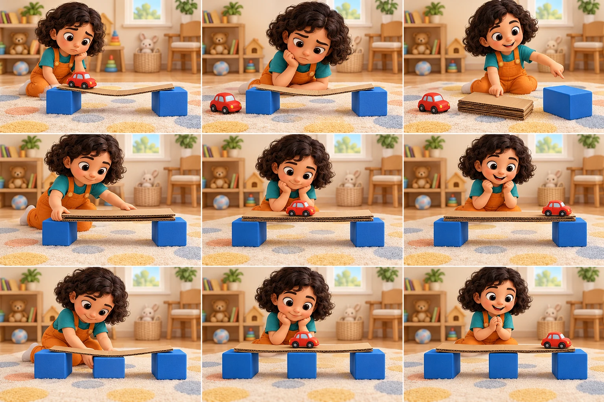

ألاحظ · أتوقع · أجرّب · أحسّن
نصنع الحلول سرّ الجسر الصغير
جسر لين… وسيارة تريد العبور! هل نجد أكثر من حل؟
نلاحظ المشكلة١ / ٣
الجسر ينحني!

تعذر تحميل الصورة. يمكنك متابعة القصة بالنص وإعادة المحاولة عند الاتصال.
التنقل يدوي متاح دائمًا. يتوقف التشغيل عند اختيار الحل.
اختر فكرة لنجربها
مشاهد الرحلة
حلك أنت قد يكون مختلفًا
هل يقل الانحناء إذا قرّبنا طرفَي الجسر؟ ارسم فكرتك أو جرّبها مع مرافق، ثم احكِ ما الذي تغيّر.